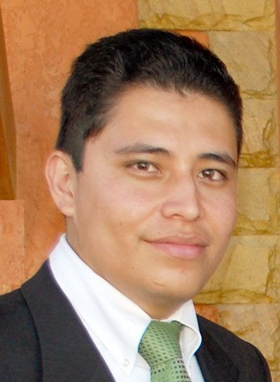

Jonathan Ortega Alvarez | WDD 130
Hello! My name is Jonathan Ortega and I am from cochabamba, Bolivia.
I really like watching movies, anime and playing the piano, I work independently making prints,
and I am starting a business selling plants to decorate the house and garden.
I served a mission in Lima Peru West, and because of this I had the opportunity to meet wonderful people
and many beautiful regions of Peru such as the cities of Huaral, Huaraz, Huacho and Lima.